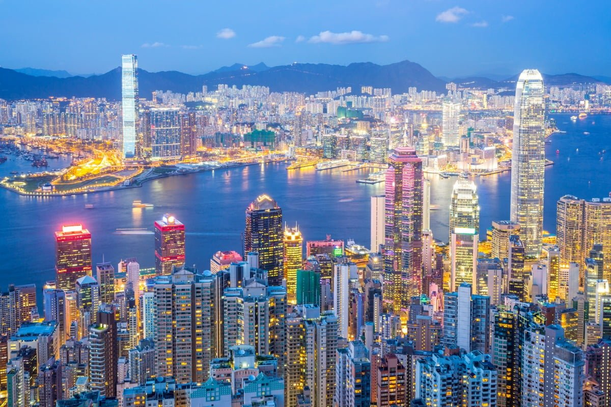
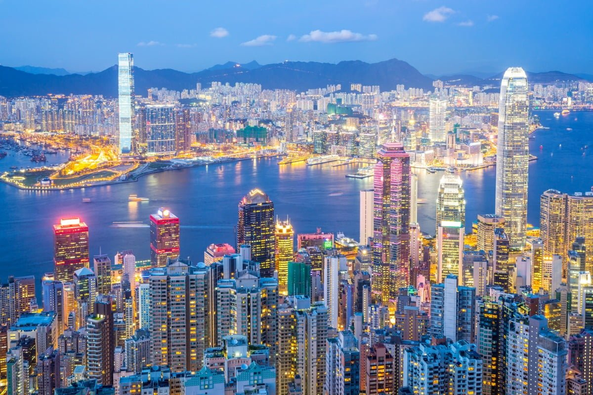

Things to know about Hong Kong
Introduction Known for being a world-class center of business, culture, and trade, Hong Kong is a jewel in the orient with international flairs. Its iconic skyline, dynamic food scene and multicultural influences attract over 65 million tourists each year. For many, Hong Kong is also a starting point for visiting China and the rest of Asia. Officially the Hong Kong Special Administrative Region of the People's Republic of China, Hong Kong is located on the south coast of China, neighboring Guangzhou Province. It is made up of Hong Kong Island, Kowloon Peninsula, and the New Territories (including more than 250 outlying islands). Ranked as the 8th most densely populated city in the world, Hong Kong’s population is made up of mainly Chinese residents. But it is also an international hub of commerce where English and Cantonese are the official languages. Hong Kong wouldn’t be what it is today without its complex past. Though it has existed for thousands of years, in as little as 100 years, Hong Kong went through dramatic transformations from a fishing community in China to a British colony to an international trade center, and eventually back to being part of China again. Like its dense population, Hong Kong has also packed in a tremendous amount of attractions. For example, you can visit one of the city's oldest temples, Man Mo Temple; ride on the Peak Tram for a bird’s eye view of Victoria Harbor; or immerse yourself in the electric atmosphere of Temple Street Night Market. Beyond the urban hustle and bustle, there’s a serene side to Hong Kong. Chill out on the beach in the Sai Kung East Country Park, enjoy a challenging hike on Lantau island’s many trekking trails, or do a little wildlife spotting in Plover Cove Country Park. The most common way to reach Hong Kong is by air. The Hong Kong International Airport has connecting flights to all major domestic and international cities. Visitors can easily find transfer options into different parts of HK, such as taxis, Airport Express trains, and buses. Some hotels offer transfer options too, so it is better to check in advance. Getting around town is also simple and convenient. Visitors can easily reach top attractions by using the extensive and affordable MRT, bus and tram systems. Unique Experiences Hong Kong is truly a world-class city with world-class attractions. It is a shopper’s paradise, a foodie’s dream, and for sightseers, the city offers impressive skyscrapers to ancient temples and everything in between. You simply can’t visit Hong Kong without seeing the spectacular views of Victoria Harbor and the city below from Victoria Peak (or The Peak). Visitors can catch the famous Peak Tram at the tram station near the entrance to Hong Kong Park by the Murray building. Beware that queuing times at the ticket office can often reach an hour or so. Try to come during not-busy hours if possible, such as in the morning before 10 am. Once you’re on top of the Peak, enjoy the breathtaking views from the observation deck. Visitors will also find the Peak Tower, Peak Galleria, and many shops and restaurants.
 
